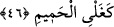

Bir haberde “Kim Arapçayı güzel konuşuyorsa Farsça konuşmasın, zîra bu nifâka
sebep olabilir” şeklinde gelmiştir. İnsânü’l-‘uyûn’da böyle geçer.
Fakir (Bursevî) der ki: Farsça Kur’ân okumanın bâtıl olduğu açıktır. Bu durumda
Kur’ân’ın nazmı ve mânâsı rükün kabûl edilmiş olur. Fakihlerin cumhûrunun görüşü de
budur. Belki de İmâm Ebû Hanîfe acziyet ânında Kur’ân’ın nazmını namazda lâzım bir
rükün saymadığı, bu şartlarda Farsça ibâreyi Kur’ân’ın nazmı gibi kabul ettiği için
böyle bir fetvâ vermiş olabilir. Nitekim bazı âlimler, îman husûsunda dil ile ikrârı
îmânın bir rüknü saymamış, sadece Müslümanlara uygulanan hükümlerin kendisine de
uygulanmasının bir şartı olarak kabul etmişlerdir.
Şâyet; Kur’ân’ın her harfinin altında ibârelerin açıklamaya yetmeyeceği nice işâretler
vardır, dolayısıyla hiçbir lügat Kur’ân’ın nazmı yerine geçemez, şeklinde bir îtirâz
gelirse bu îtirâz şöyle reddedilebilir: Hadis usûl âlimleri hadislerde âlim için ihtisârı
câiz görmüşler, fakat câhil için câiz görmemişlerdir.[215] Halbuki Peygamberimiz (s.a.)
“cevâmi‘u’l-kelim” yani kendisine özlü sözler verilen zattır. Ve onun da sözlerinin her
bir kelimesinde nice sır ve rumûzlar vardır. Bunu iyi anla!
45. O, karınlarda maden eriyiği gibi kaynar.
Bu zakkum yemeği “maden eriyiği gibi” kâfir “karınlarda kaynar”.
Peygamberimiz’den (s.a.) mühl kelimesinin tefsiri zeytinyağı tortusu olarak yapılmıştır.
Bu ise yağın posasıdır. Kişi bunu yüzüne yaklaştırınca yüzünün derisi oraya düşer. Katı
ve siyah olduğu için posaya benzetilmiştir. Bazıları mühlün, ateşe konulan demir, kalay,
pirinç ve benzeri madenlerin eriyip kaynaması olduğunu söylemişlerdir. Bu yemek,
erimiş bakır ve pirince, sıvıya benzetilmiştir. Ancak bu benzerlik kaynama husûsunda
değil, erime ve harâret husûsundadır. Kaynamada ona benzetilmiştir. Yani bu yemek
kâfirlerin karnında kaynamaktadır.
46. Kaynar suyun kaynaması gibi.
“Kaynar suyun kaynaması gibi” ki, o suyun hararetinin şiddetinden dolayı sıcaklığı
ve kaynaması son noktadadır. Mide için tiksindiricidir. Bazıları şöyle demiştir: Onların
bağırsaklarını parça parça eder, onların bağırsak ve iç organlarını eritir.
Bir hadîs-i şerîfte şöyle buyrulmuştur: “Ey insanlar Allah’tan hakkıyla korkun! Şâyet
zakkumdan bir damla yeryüzüne damlasaydı, tüm dünyâ halkının hayatı zehir olurdu.